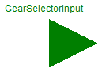
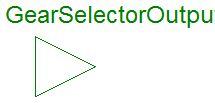

Utility models needed in this test model
Extends from Modelica.Icons.Package (Icon for standard packages).
| Name | Description |
|---|---|
| GearSelectorType | |
| IntegerToGearSelector | Convert Integer to GearSelectorType signal |
type GearSelectorType = enumeration( R, N, D, G1, G2, G3);
 FMITest.SimpleConnections.SeriesWithEnumerations1.Internal.GearSelectorInput
FMITest.SimpleConnections.SeriesWithEnumerations1.Internal.GearSelectorInput

Connector with one input signal of type GearSelectorType.
Extends from GearSelectorType.
 FMITest.SimpleConnections.SeriesWithEnumerations1.Internal.GearSelectorOutput
FMITest.SimpleConnections.SeriesWithEnumerations1.Internal.GearSelectorOutput

Connector with one output signal of type GearSelectorType.
Extends from GearSelectorType.
Convert Integer to GearSelectorType signal
This block computes the output y as Real equivalent of the Integer input u:
y = u;
where u is of Integer and y of Real type.
Extends from Modelica.Blocks.Interfaces.BlockIcon (Basic graphical layout of input/output block).
| Type | Name | Description |
|---|---|---|
| input IntegerInput | u | Connector of Integer input signal |
| output GearSelectorOutput | y |